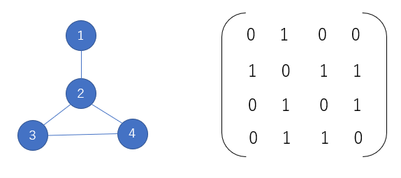

1. ネットワークの表現¶
はじめに¶
グラフが扱えるとたくさんの問題が情報科学的にみられるようになります。路線図、血縁関係、物流など世の中にはグラフで表すことができるものが多くあります。いろいろな事象、現象の接続関係をグラフでモデル化することで、プログラムでいろんな問題を考えることができるようになって楽しくなります。
用語の確認¶
グラフは、いくつかの頂点（点、節点、ノード、vertex）とそれらをつなぐいくつかの辺（枝、線、エッジ、arc）からなる図形
頂点集合V と辺集合E でグラフG = (V;E) を表す．
例: 3 つの頂点V = {1; 2; 3}の辺を全て結んだグラフ(=三角形) は，E = {{1; 2}; {2; 3}; {3; 1}}
有向辺（→）をもつ有向グラフと無向辺（－）をもつ無向グラフがある。
次数：ある頂点に接続する辺の数を次数という（eg. 3角形のグラフの各頂点の次数は２）。
隣接：二つの頂点が共通の接続辺をもつとき隣接するという。
道（路）:隣接する頂点をリストにして並べたものを道（路、path, trail, walk,それぞれちょっとずつ使い方を変えるけど）と呼ぶ。
グラフの表現¶
隣接行列¶
隣接行列では、節点iからjへの辺が存在する時、行列のi行目j列目の値を1に、そうでないときに0とする。辺に向きのない、無向グラフを扱う場合には行列は対称になる。グラフを行列で扱うことでいろいろな数学的な扱いが可能になります。
{kind=link}
隣接リスト¶
隣接リストでは、下のような各頂点が持つ接続先をリストとしてグラフを表されます。 * 1 → [2] * 2 → [1,3,4] * 3 → [2,4] * 4 → [2,3] * D={1:[2],2:[1,3,4],3:[2,4],4:[2,3]} つまり、li=[[2],[1,3,4],[2,4,],[2,3]]として、頂点Nの接続先はli[N]となります。辺の数がN^2よりかなり少ない疎なグラフの場合、隣接行列はほとんどの要素が０になり無駄が多いので、隣接行列を用いることがふさわしい。
Network Xをつかってみる¶
NetworkXは、pythonでグラフ、ネットワークを扱うためのライブラリで、非常にたくさんの機能が実装されており、グラフの作成、分析、描画までがこれだけでできます。
グラフの作成¶
頂点と辺からグラフを作る
import networkx as nx # networkxをインポート
import matplotlib.pyplot as plt #描画のため
G = nx.Graph() # 点も辺もない空っぽのグラフを作る
G.add_node(1) #頂点1を加える
G.add_nodes_from([2,3,4,5])# 2,3,4,5をまとめて加える
G.add_edge(1, 2) #辺(1,2)を加える
G.add_edges_from([(1,3),(2,3),(3,4),(3,5)]) #まとめて辺を加える
nx.draw(G) #描画
隣接行列・隣接リストからグラフを作る
import numpy as np
import matplotlib.pyplot as plt
edgelist = [(1,2),(1,3),(2,3),(3,4),(3,5)] #隣接リスト
A = np.array([[0,1,1,0,0],[1,0,1,0,0],[1,1,0,1,1],[0,0,1,0,0],[0,0,1,0,0]]) # 隣接行列
G2 = nx.from_edgelist(edgelist) # 隣接リストからグラフをつくる
G3 = nx.from_numpy_matrix(A) # 隣接行列からグラフを作る
plt.subplot(2,1,1)
nx.draw(G2)
plt.subplot(2,1,2)
nx.draw(G3)
グラフの描画¶
NetworkXの関数、draw_networkx()をとりあえず使いましょう。いろいろなオプションを設定することできれいなグラフが作れます。
nx.draw_networkx(G,
pos=nx.circular_layout(G), # レイアウト
with_labels=True, # ラベルの有無
node_color="red", # 頂点の色
node_size=400, # 頂点の大きさ
edge_color="blue", # 辺の色
width=2) # 辺の太さ
注釈
レイアウトについて
グラフを描画するときに頂点をどのように配置するかが見やすさに大きく影響します。頂点や辺が重ならず、均等に配置できるよういろいろな工夫が存在します。NetworkXでは、多くのレイアウトが用意されています。
spring_layout(): ばねで頂点どうしがつながれている感じ
circular_layout: 円環状に配置
random_layout: ランダムに配置
ここでは、有名なZachary's Karate Clubのソーシャルネットワークを使いましょう。この空手クラブは、後にMr. HIとOfficerの二つの派閥に分裂します。
G = nx.karate_club_graph() # GとしてKarate Clubのグラフを作成
print(G.nodes[0]["club"]) # 派閥はattributeとして記録されている
print(G.nodes[30]["club"])
描画してみましょう
plt.figure(figsize=(12,10))
P=nx.spring_layout(G)
nx.draw_networkx(G,pos=P,with_labels=True)
派閥ごとに色分けしてみます。nodeとedgeとlabelをそれぞれ別々に書く関数を使います。
node_list1=[] #派閥ごとの頂点リストを作る
node_list2=[]
l=len(G.nodes)
for i in range(l):
if G.nodes[i]["club"]=="Mr. Hi": #派閥を読み取って
node_list1.append(i) #分ける
else:
node_list2.append(i)
plt.figure(figsize=(12,10))
nx.draw_networkx_nodes(G,pos=P,nodelist=node_list1, node_color='red') # Mr.Hiの派閥の点を描画
nx.draw_networkx_nodes(G,pos=P,nodelist=node_list2, node_color='blue') # officerの派閥の点を描画
nx.draw_networkx_edges(G,pos=P) # edgeを描画
labels=nx.draw_networkx_labels(G, pos=P) # ラベルを描画
plt.show()
簡単なグラフの特徴量¶
次数¶
各頂点に接続している辺の数を次数と呼びます。各頂点の次数がすべて偶数であればそのグラフはオイラー閉路を持ちます。
print(nx.degree(G))
次数ヒストグラムを書いて、次数の分布をみておきましょう。後々、重要になります。
H=nx.degree_histogram(G) # 度数を返す
print(H)
plt.plot(H)
plt.xlim([0,17])
グラフの密度¶
グラフの頂点の数に対して可能な最大の辺の数で、実際の辺の数を割ったもの。
nx.density(G)
中心性¶
グラフには重要な頂点とそうでない頂点がある。この重要度を測る指標として中心性がある。どのような頂点を重要と考えるかによって、いろいろな中心性がある。 https://networkx.org/documentation/stable/reference/algorithms/centrality.html
次数中心性¶
次数が多いものが中心
D=nx.degree_centrality(G)
print(D)
カラーマップを使って描画してみる（https://matplotlib.org/stable/tutorials/colors/colormaps.html）
plt.figure(figsize=(12,10))
nodes=nx.draw_networkx_nodes(G,pos=P,cmap=plt.cm.plasma,node_color=list(D.values()))
nx.draw_networkx_edges(G,pos=P)
labels=nx.draw_networkx_labels(G, pos=P)
plt.colorbar(nodes)
plt.show()
媒介中心性¶
2頂点間の最短路に含まれる数が多いほど中心
B=nx.betweenness_centrality(G)
plt.figure(figsize=(12,10))
nodes=nx.draw_networkx_nodes(G,pos=P,cmap=plt.cm.plasma,node_color=list(B.values()))
nx.draw_networkx_edges(G,pos=P)
labels=nx.draw_networkx_labels(G, pos=P)
plt.colorbar(nodes)
plt.show()
近接中心性¶
距離がみんなに近いほど中心
C=nx.closeness_centrality(G)
plt.figure(figsize=(12,10))
nodes=nx.draw_networkx_nodes(G,pos=P,cmap=plt.cm.plasma,node_color=list(C.values()))
nx.draw_networkx_edges(G,pos=P)
labels=nx.draw_networkx_labels(G, pos=P)
plt.colorbar(nodes)
plt.show()
{kind=link}